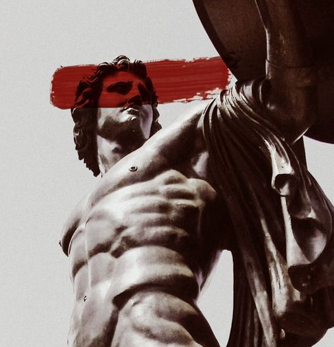

' Calistenia término que timológicamente proviene del griego kalos (belleza) y sthenos (fortaleza). El objetivo es la adquisición de fuerza, resistencia, agilidad, equilibrio, coordinación y flexibilidad a través de un entrenamiento con el propio peso corporal.